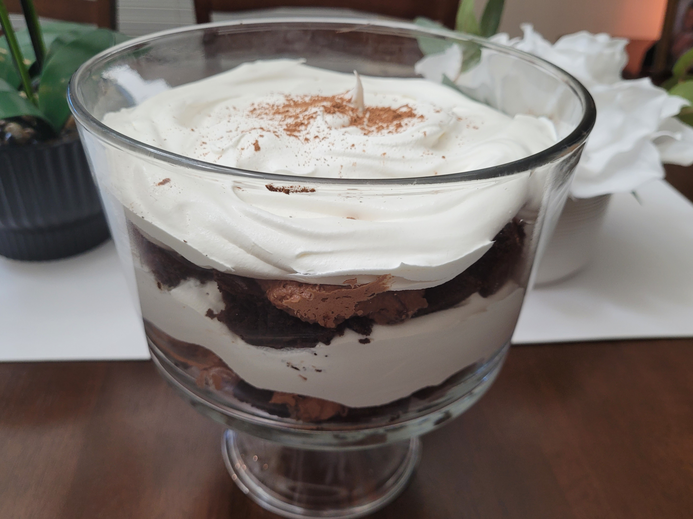

Chocolate Trifle
Lovely layers of chocolate and cream!

Did I buy a trifle bowl just for this? Yes.
Do you need one? No.
Total Time:
9 hours and 25 minutes
Personal Enjoyment Rating:
★ ★ ★ ★
A star is knocked off not because of the taste, but because
I have to eat this slower as the cream is sticky...
Ingredients
- 1 box brownie mix
- 1 egg
- 3/4 cup water
- 1/4 cup ml of a neutral oil (sunflower oil, vegetable oil, etc.)
- 1 (14 oz) can condensed milk
- 1 (8 oz) package instant chocolate pudding mix
- 1 (20 oz total) container frozen whipped topping
- cocoa powder or bar chocolate candy, to sprinkle
Instructions
- Preheat the oven to 350 degrees F (175 degrees C). Grease a 9-inch square glass baking pan.
- Combine brownie mix, egg, 1/4 cup water, and vegetable oil in a large bowl. Stir until well-blended, about 50 strokes. Spread into the prepared pan.
- Bake in the preheated oven until a toothpick inserted 1 inch in from the edges comes out clean, 25 to 30 minutes. Remove from the oven and let cool completely, about 30 mintues.
- Cut cooled brownies into 1-inch squares and set aside.
- Combine condensed milk, remaining 1/2 cup water, and pudding mix in a large bowl; mix until smooth. Fold in 8 ounces whipped topping until no streaks remain.
- Place 1/2 of the brownies in a trifle bowl or glass serving dish. Top with 1/2 of the pudding mixture, then 1/2 of the 12-ounce container of whipped topping. Repeat layers. Sprinkle cocoa or chocolate on top for garnish.
- Refrigerate 8 hours before serving.
Recipe Source: Allrecipes